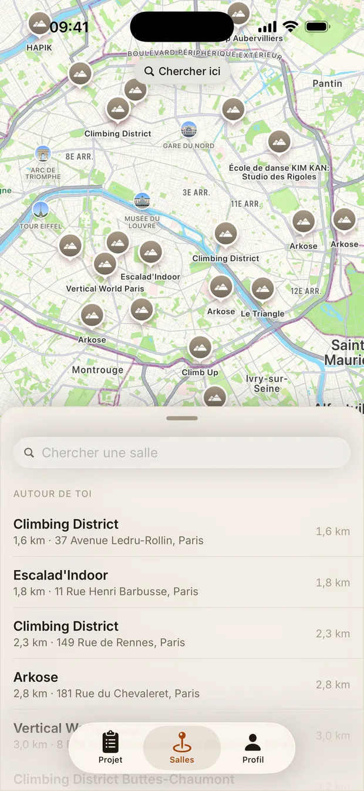

Scanne ton bloc avec une photo
Photographie le pan, touche la première prise de ta voie : Climbr détoure le bloc sur la vraie photo du mur. Plus de « c'était la rouge à côté du volume ».
Prends ton bloc en photo, touche la première prise : Climbr détoure ta voie. Note chaque essai, et suis ta progression salle par salle.


Pas de croquis, pas de cotation à inventer, pas de compte. La photo du mur, tes prises, tes essais.
Photographie le pan, touche la première prise de ta voie : Climbr détoure le bloc sur la vraie photo du mur. Plus de « c'était la rouge à côté du volume ».
À chaque séance, note où tu es tombé. La prise atteinte suffit : l'app en tire ta hauteur, ton meilleur point, la séance d'avant.
Chaque bloc sur sa photo, trié par couleur de circuit. En cours, toppés, flashés : un disque de progression par bloc dit où tu en es.
Ton volume d'entraînement sur 7 jours, un mois, trois mois. Ton niveau par salle, couleur par couleur, dans l'échelle que la salle affiche.
Le pan entier, tel qu'il est. Une photo par mur, autant de blocs que tu veux dessus.
Climbr détoure la voie de sa couleur. Une prise oubliée, tu la touches ; une prise en trop, tu la retires.
Tombé ici, arrivé là, toppé. Pas de cotation à saisir : la prise atteinte dit tout.
Climbr arrive sur iPhone. En attendant, une question, une salle à ajouter, une idée : écris-nous.
Nous écrireguillaume@athanor-studio.io
Un bug, une salle qui manque, une prise mal détourée : guillaume@athanor-studio.io. Réponse sous quelques jours.
Climbr fonctionne sans compte. La photo du mur est analysée pour retrouver les prises, puis reste dans ton carnet. Le détail est dans la politique de confidentialité.
Climbr est une app d'Athanor Studio, studio d'apps fondé en 2024 à Paris.